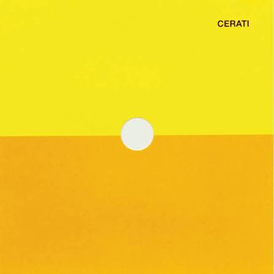
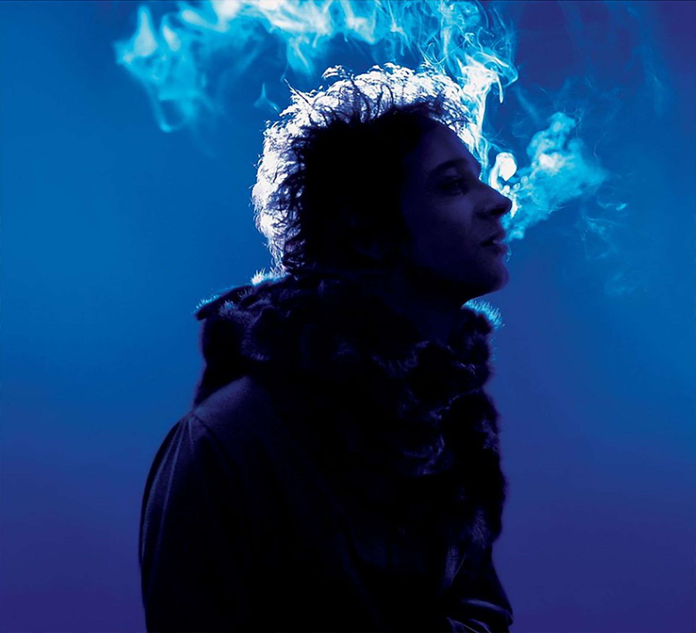
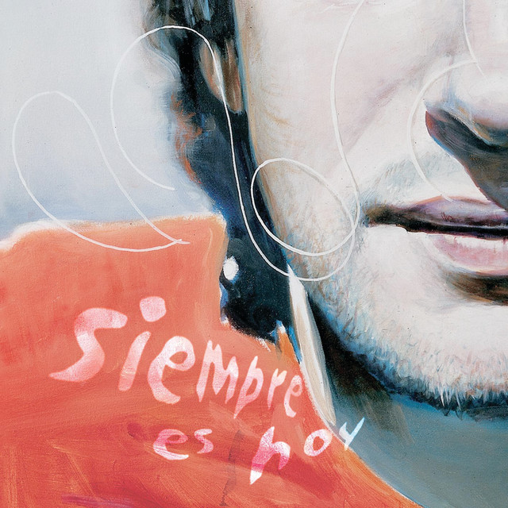
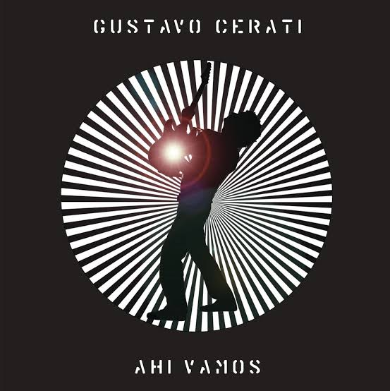
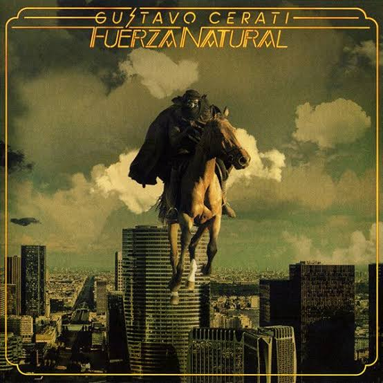

Amor Amarillo
1993Un disco íntimo y experimental, grabado casi todo en su casa en Santiago de Chile.
- Te llevo para que me lleves
- Pulsar
- Lisa
Su primer paso fuera de Soda Stereo.
Sus cinco discos de estudio como solista. Pasa el cursor por las portadas y haz clic en «Conocer más».

Un disco íntimo y experimental, grabado casi todo en su casa en Santiago de Chile.
Su primer paso fuera de Soda Stereo.

Mezcla rock, electrónica y orquesta. Para muchos es su mejor disco.
El disco que definió su estilo como solista.

Un disco largo y bailable, con mucha electrónica y pop.
Con los años se volvió uno de los favoritos de sus fans.

El regreso al rock con guitarras eléctricas y canciones más directas.
Aquí están algunos de sus temas más cantados.

Un sonido más acústico y folk, con guitarras y mandolinas.
Su último disco de estudio.